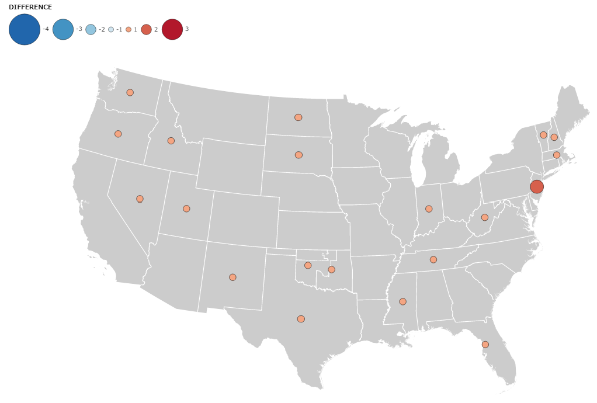

This project will analyize the geographical destribution of teachers who were trained at the Oswego Primary Teachers Training School, more commonly known as the Oswego Normal School, NY, in the late 19th century. The intended audience is education historians. Hisotorians of American education have argued that many women in the East in the mid- to late 19th century traveled to the West to teach. The scholarship tend to tell the story of the New England and New York women who migrated to the frontier, and has paid less attention to the overall geographic distribution of the graduates of normal schools. Among the graduates of normal schools in the East, how many migrated to the West (or South) and how many remained in the East? And how many left the United States? Did the pattern change over time? This project seeks to add nuance to the body of research on 19th century teacher migration by answering these questions with geovisualization using the Oswego Normal School as an example.
This project drew the data on the geographical distribution of teachers from The Contribution of the Oswego Normal School to Educational Progress in the United States by Andrew Phillip Hollis (1898). According to the book's preface, Hollis originally wrote it as a thesis for a degree in the Department of Pedagogy of the University of Wisconsin. In the book, he presents two tables on the geographical distribution of Oswego graduates. One table is on graduates from 1861 to 1886 while another is on graduates from 1867 to 1897 (Note that the Oswego Normal School was founded in 1961). The data for the tables are "Based on alumni records" and he writes that "It is needless to say that the table is incomplete" (p. 153). Altough alumni records do not gurantee absolute accuracy, it is still useful for this project in telling the overall trend of the geographical distribution of Oswego graduates. For historical state boundary files, this prject relies on the National Historical Geographic Information System (NHGIS).
To transform these data into a usable form, I first created csv files from the numbers and the names of states, territories, and countries in the tables in Hollis's book. Next, I found that the state boundary files use NHGISST as the state and territory identifier. Therefore, I decided to use NHGISST and included it in the cvs files.
The tricky part was how to handle changes in state borders when mapping changes in the geographic distribution of graduates. In this case, what was Dakota Territory on the 1870 map became North and South Dakota on the 1890 map. Fortunately, there is no record of any graduates in North Dakota. Therefore, to calculate the difference in distribution, I used the annual average of the number of graduates in South Dakota minus the annual average of the number of graduates in the Dakota Territory.
Unfortunately, education historians have not addressed teacher migration using geovisualization techniques. There is a monochrome flow map on the geographical distribution of Owego graduates in the 1960s made by an unknown author. It looks like the author used the same data that I have.
Looking not only at teacher migration but also at internal migration in general, there are many works on the Great Migration, for example, the mass migration of southern Blacks to the East and West in the first half of the 20th century. Authors often use arrows to show the migration flow (e.g., Siegel, 2005; Mellinger, n.d.). In journal papers, historians use choropleth maps too (e.g., Collins & Wanamaker, 2015). The US Census Beurau (2012) uses a point map to explain the phenomena; The circle size reffers to the city population and the circle color reffers to the changes in share of Blacks.
For this project, I want to map not only the number of people who moved from New York to other states, but also the number of people who stayed in New York after finishing school. Therefore, a flow map, which is often used for mapping migration, is not appropriate.
In this project, choropleth maps will first be used to analyze the overall pattern of teacher migration in the two time periods 1861-1865 and 1887-1897. When hovering over a polygon, the number of graduates in that state will be displayed so that map readers can see the details of the data.
Next, I will use point symbol maps to analyze the changes in migration patterns between the two time periods. In doing so, the point symbols representing positive changes are colored red, and the symbols representing negative changes are colored blue, so that the reader of the map can intuitively understand the positive and negative nature of the changes.
The two maps show that majority of graduates stayed in New York and neighboring states. Although there is a data quality limitation (the author who collected those data admits that not all graduates responded to his survey), it looks like Oswego graduates were not very motivated to teach in the Far West.
Next, a graduated symbol map is used to analyse how the migration pattern had changed.
Add discussion after problem is solved.
This project examined the migration of teachers in the 19th century, often mentioned in the history of the teaching profession, using graduates of the Oswego Normal School as examples. It showed that from the 1860s to the late 1890s, graduates remained primarily in New York and, if they moved to another state, they remained in states near New York, such as New Jersey. Still, from the 1860s through the 1980s, there were about two to four graduates each year in the Midwest. However, as the point symbol map shows, during the 1890s, the number of Midwestern residents declined by about one to three. In addition, the number of people who migrated to the Far West did not change significantly between these two time periods.
These findings should alert scholars to the overemphasis on the presence of women teachers who migrated to the West. Yes, some teachers migrated west to teach, but the overwhelming majority did not.